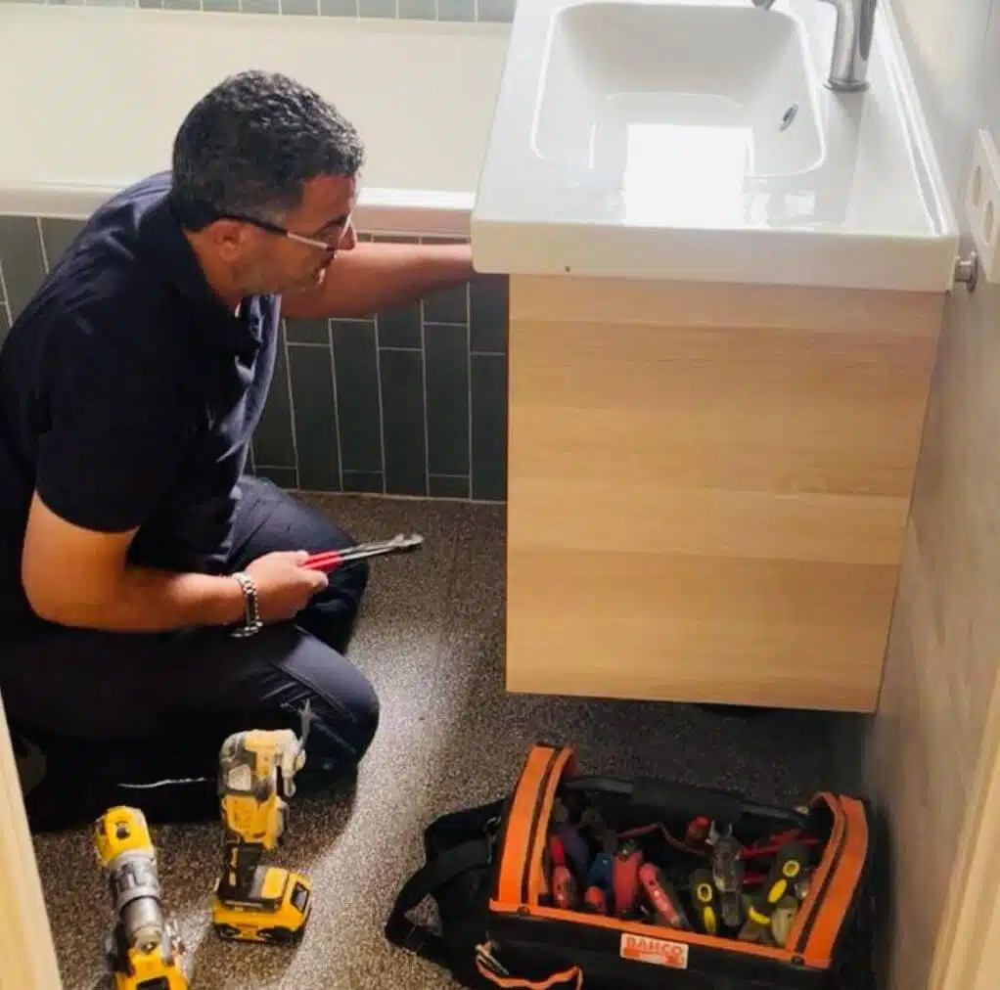
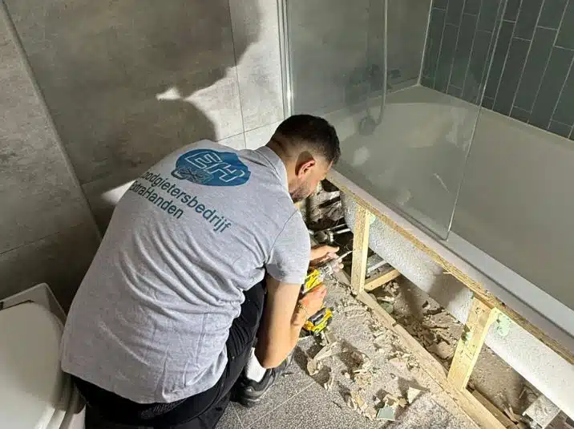
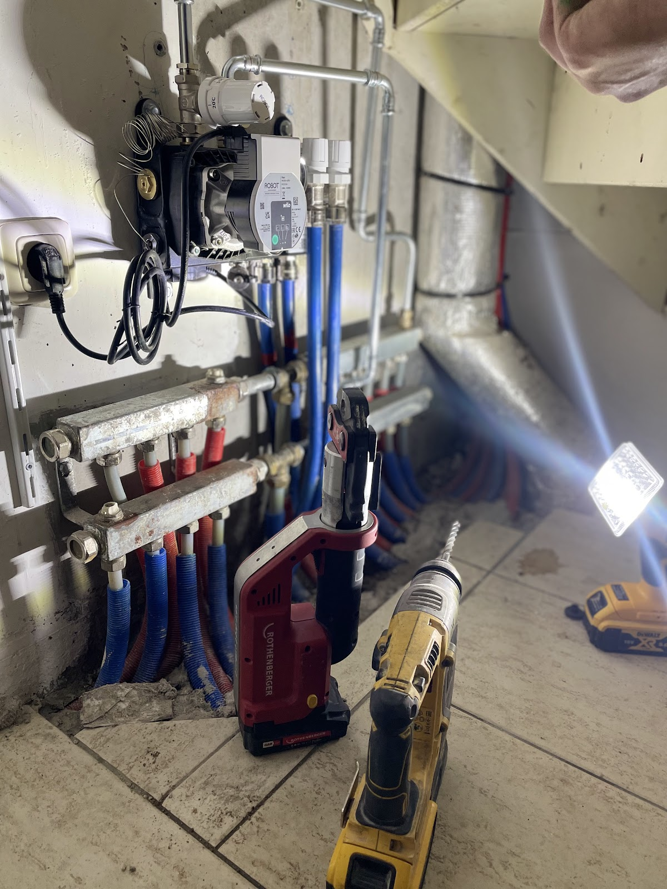
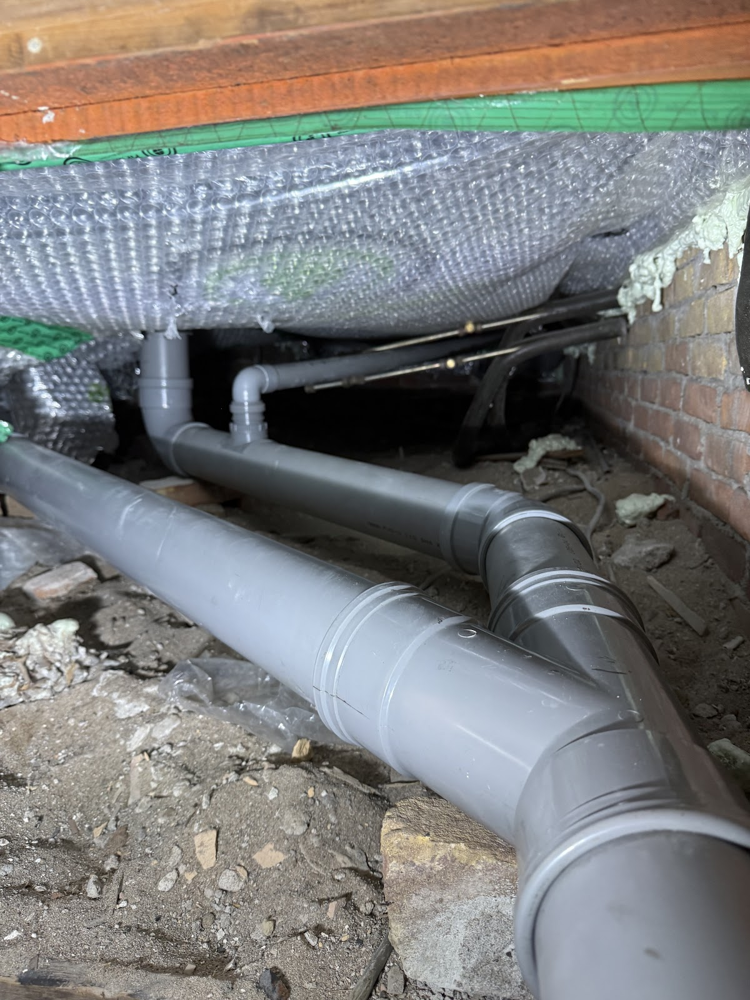
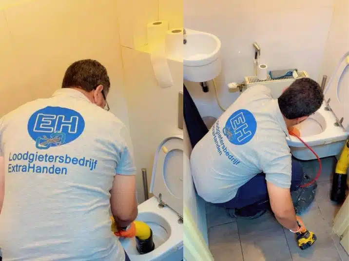
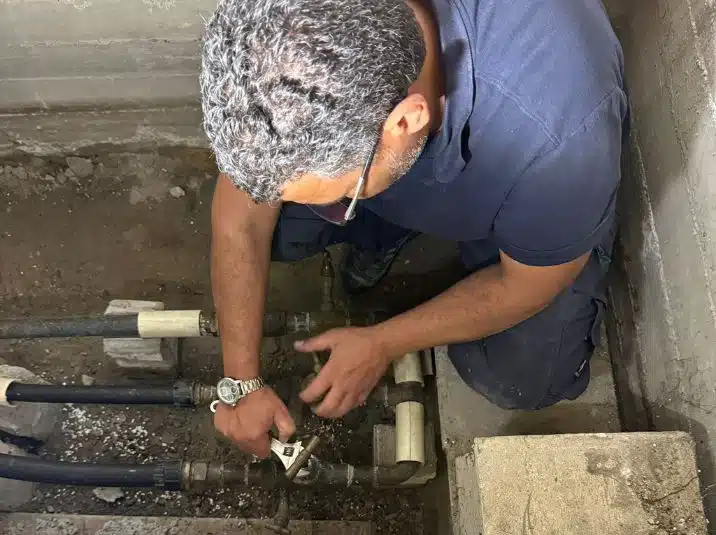
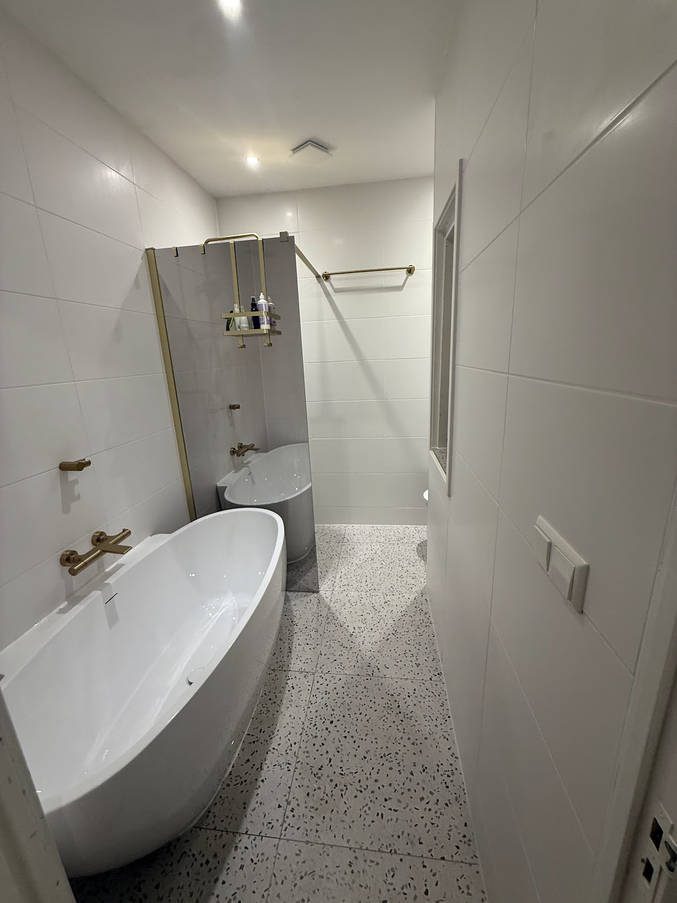
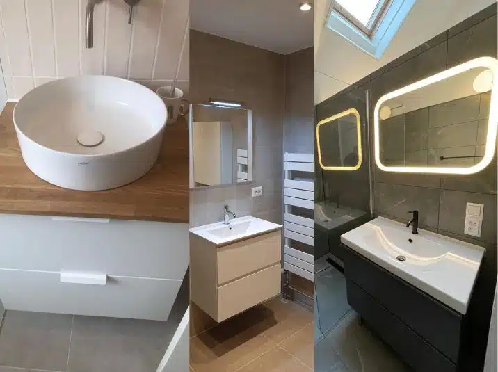
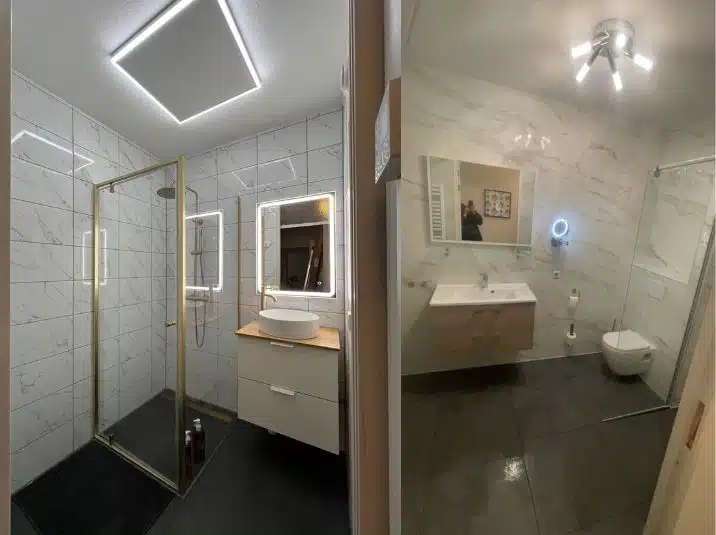
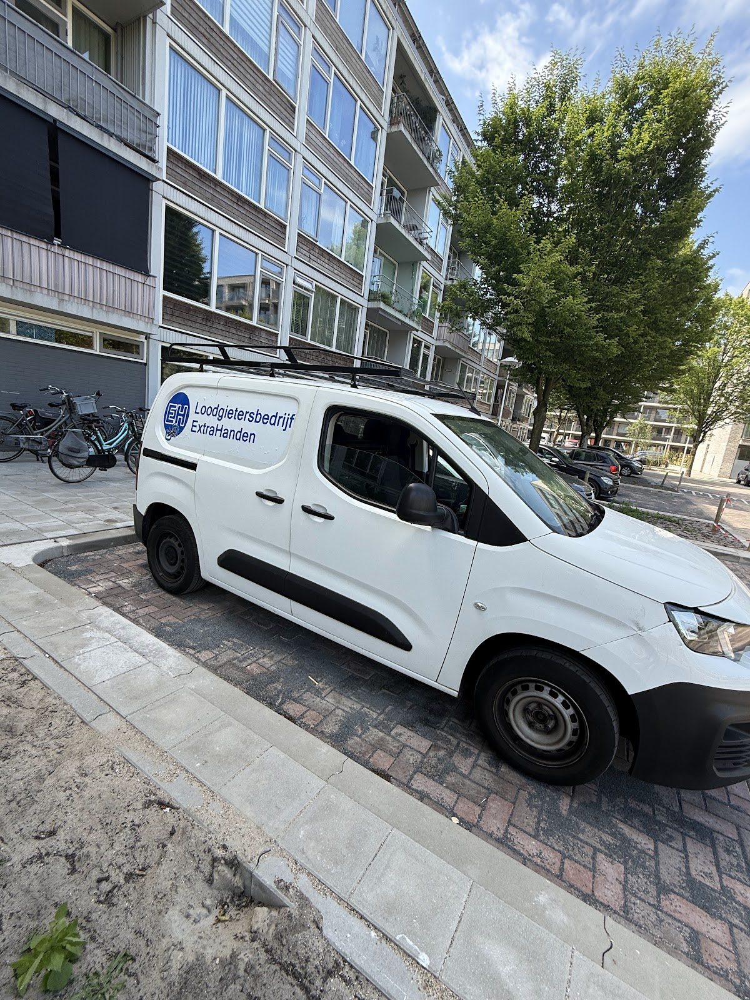

Loodgieter in Utrecht, dag en nacht
Altijd een extra paar handen.
Lekkage, verstopping of geen warm water? Bel ons, ook 's nachts en in het weekend. Wij komen snel langs, leggen eerlijk uit wat er speelt en lossen het netjes op.
5 sterren uit 205 Google-reviews

Wat is er aan de hand?
Van een druppelende kraan tot een complete badkamer. Eén nummer voor al het loodgieterswerk in huis of in uw pand.
Bel en leg het uit, wij denken mee-
Lekkage
Een lekkende kraan, een gesprongen leiding of vocht achter de muur. Wij sporen het lek op, ook in vloer of vloerverwarming, zonder onnodig breekwerk.
-
Verstopping
Wc, gootsteen, douche of wastafel. Ook vaatwasser, regenpijp en riool. Komt het steeds terug, dan kijken we met een camera waar het zit.
-
Verwarming en cv-ketel
Koude radiatoren, getik of gebrom in de leidingen, of helemaal geen warmte. Wij zoeken de oorzaak en verhelpen het. Ook voor onderhoud aan uw cv-ketel.
-
Riool en afvoer
Rioollucht, een borrelende of overlopende afvoer. Wij leggen uit hoe uw riolering loopt en zorgen dat het weer goed weg kan.
-
Leidingwerk
Nieuwe leidingen leggen of bestaande verleggen, bijvoorbeeld voor een nieuwe keuken met vaatwasser of een wasmachine op een andere plek.
-
Sanitair en badkamer
Een nieuwe kraan, wc of douche, of een complete badkamerrenovatie met tegelwerk. Alles in eigen beheer, met één vast aanspreekpunt.
Gebeld, gekomen, opgelost.
Bij spoed staan wij meestal binnen 30 tot 60 minuten bij u voor de deur. Niet alleen snel, ook grondig: we kijken eerst goed wat er speelt voordat we iets voorstellen.
-
1
U belt of appt
Dag en nacht, ook in het weekend en met de feestdagen. U krijgt direct iemand die verstand van zaken heeft.
-
2
Wij komen kijken
We zoeken de oorzaak, leggen in gewone taal uit wat er aan de hand is en wat het kost. Pas daarna beginnen we.
-
3
Opgelost en opgeruimd
Vakwerk dat blijft zitten, en we laten alles netjes achter. Met advies om herhaling te voorkomen.
- Geen voorrijkosten binnen Utrecht bij uitgevoerd werk
- Heldere prijs vooraf, geen verrassingen
- Garantie op de uitgevoerde werkzaamheden
- Pinnen kan gewoon ter plekke






En als het niet alleen gerepareerd, maar ook mooi moet worden.
Een nieuwe badkamer of keukenaansluiting: wij verleggen leidingen en afvoer, plaatsen sanitair en zetten het tegelwerk. U heeft één vast aanspreekpunt van begin tot oplevering.


5,0
uit 205 reviews op Google
Wat Utrechters over ons zeggen.
"Wadi heeft op zaterdagochtend een verstopping van de gootsteen in de keuken opgelost. Hij was snel beschikbaar, vriendelijk en ging professioneel te werk. We zijn erg tevreden en raden hem van harte aan."
"Als je met een loodgietersprobleem zit waar je écht snel hulp bij nodig hebt, dan is Loodgietersbedrijf ExtraHanden een aanrader. Wij hadden met spoed (we zaten zonder verwarming) hulp nodig en ze stonden snel voor de deur. De loodgieter werkte snel en netjes en gaf duidelijke uitleg over het probleem - er bleek niets mis te zijn met onze CV-ketel, maar het probleem was een lekkage. Tot slot transparante prijzen en vriendelijke service."
"We hadden een verstopping in de keuken. Deze loodgieter gebeld en kwam de volgende ochtend gelijk langs. Heel goed verholpen met verstand van zaken. De communicatie verliep zeer prettig. Als je met loodgieters problemen zit, zou ik dit bedrijf zeer aanraden!"
"Mijn onderbuurman had lekkage in het plafond en dit leek door mijn vloerverwarming te komen. Na een berichtje gestuurd te hebben naar Extrahanden kreeg ik binnen een paar minuten reactie. Ze konden dezelfde dag nog langskomen voor het controleren van mijn vloerverwarming op lekkages met speciale apparatuur. Ze hebben erg goed werk geleverd. Aanrader!"
"Loodgieter gebeld voor wc, aardige man, kwam gelijk langs. Wc gelijk gemaakt, tevreden!"
"Vandaag Loodgietersbedrijf Extrahanden ingeschakeld voor een lastige verstopping en lekkage in de keuken. De communicatie vooraf was top: snel een afspraak en een heldere prijsopgave. De klus zelf bleek nog niet zo makkelijk, maar werd zeer professioneel aangepakt en opgelost. Echt vakwerk. Wat de service helemaal afmaakte, was het waardevolle advies dat ik na afloop kreeg om herhaling te voorkomen."

Vanaf Overvecht snel door heel Utrecht.
Onze bus staat aan de Camera Obscuradreef. Van daaruit rijden we dagelijks naar particulieren, bedrijven en VvE's in de stad en de plaatsen eromheen.
- Binnenstad
- Overvecht
- Zuilen
- Lombok
- Kanaleneiland
- Hoograven
- Lunetten
- Leidsche Rijn
- Vleuten
- De Meern
- Nieuwegein
- Houten
- Zeist
Woont u net daarbuiten? Bel even, dan kijken we wat er kan.
Water waar het niet hoort?
Draai de hoofdkraan dicht als dat kan, en bel ons. We zijn 24 uur per dag, 7 dagen per week bereikbaar.
Bel 06 81369719- +31 6 81369719
- Adres
- Camera Obscuradreef 49
3561 XM Utrecht - Open
- Maandag t/m zondag
24 uur per dag